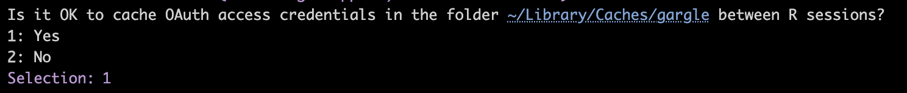
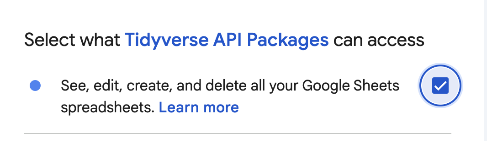

library(dplyr, warn.conflicts = FALSE)
library(googlesheets4, warn.conflicts = FALSE)
library(googledrive, warn.conflicts = FALSE)7 Google Sheets
This note is all about importing and exporting data to/from Google Sheets. The primary motivation for me to create this note initially was a personal budget app I was working on. I knew that I wanted to use Shiny as a front end for that app, but I wasn’t sure what to use a back end. Then, I came across an article by Dean Attali about persistent data storage in Shiny apps that discusses using Google Sheets as a back end for Shiny apps.
Some of the nice things about using Google Sheets in this way are:
It’s relatively simple and straightforward. Many people (including me) are already comfortable with Google Sheets.
There’s no cost involved.
The data tables can be viewed/edited immediately in Google Sheets. You don’t need to wait until you have a front end built. I’m sure there are downsides that go along with this, but it’s a nice crutch for people who are new to database development.
Useful websites:
7.1 Load packages
7.2 Sheet ID
Save the sheet id for use below. You can pull it from the sheet’s URL. For example, the sheet id for the budget app is: 1153fK76wz8cu4URFM7eidlyv8AEUoSKAAIt-q6uH0ZE. It is taken from the budget app’s url, which is: https://docs.google.com/spreadsheets/d/1153fK76wz8cu4URFM7eidlyv8AEUoSKAAIt-q6uH0ZE/edit#gid=1694905897
budget_app_id <- "1153fK76wz8cu4URFM7eidlyv8AEUoSKAAIt-q6uH0ZE"7.3 View Google Sheet
View the Google Sheet in the browser (optional). The code below isn’t run.
gs4_browse(budget_app_id)7.4 Import
Now, we will import a Google Sheet.
entities <- read_sheet(ss = budget_app_id, sheet = "Entities")! Using an auto-discovered, cached token. To suppress this message, modify your code or options to clearly consent to
the use of a cached token. See gargle's "Non-interactive auth" vignette for more details: <https://gargle.r-lib.org/articles/non-interactive-auth.html>ℹ The googlesheets4 package is using a cached token for
'brad.cannell@gmail.com'.✔ Reading from "Budget App Prototype".✔ Range ''Entities''.The first time you run this code, you will have to authorize the package to access your Google Drive.

Next, you will have to select the Google account you want to give the Tidyverse API Packages authorization to access. Then, you will need to make sure to click the checkbox that gives the Tidyverse API Packages authorization to “see, edit, create, and delete all your Google Sheets spreadsheets.”

Warning
MAKE SURE TO CLICK THE CHECKBOX. Don’t just hit continue.
After clicking the checkbox, click Continue. After doing so, you should be able to close the browser window and run the code without issue. If there is an issue, try restarting the R session and going through the authorization process again.
Alternatively, we can use the googledrive package and the sheet’s name to import the sheet into our R session.
entities <- drive_get("Budget App Prototype") |>
read_sheet("Entities")! Using an auto-discovered, cached token. To suppress this message, modify your code or options to clearly consent to
the use of a cached token. See gargle's "Non-interactive auth" vignette for more details: <https://gargle.r-lib.org/articles/non-interactive-auth.html>ℹ The googledrive package is using a cached token for 'brad.cannell@gmail.com'.✔ The input `path` resolved to exactly 1 file.✔ Reading from "Budget App Prototype".✔ Range ''Entities''.
Note
The first time you use the googledrive package, you will have to go through the authorization process described above.
7.5 Metadata
It is also possible to optionally view metadata about the sheet.
gs4_get(budget_app_id)
── <googlesheets4_spreadsheet> ─────────────────────────────────────────────────
Spreadsheet name: "Budget App Prototype"
ID: 1153fK76wz8cu4URFM7eidlyv8AEUoSKAAIt-q6uH0ZE
Locale: en_US
Time zone: America/Mexico_City
# of sheets: 13
# of named ranges: 26
── <sheets> ────────────────────────────────────────────────────────────────────
(Sheet name): (Nominal extent in rows x columns)
'Development NOTES': 992 x 2
'Dev Test Functions': 50507 x 26
'Lists': 1007 x 27
'Dev Bills Due': 1007 x 28
'Owed': 1000 x 26
'Income': 1000 x 26
'Entities': 1000 x 26
'Accounts': 50522 x 32
'PaymentPeriods': 1000 x 27
'InterestRates': 1000 x 27
'PaymentAccounts': 1000 x 27
'PaymentMethods': 1000 x 27
'USAA Checking': 1000 x 26
── <named ranges> ──────────────────────────────────────────────────────────────
(Named range): (A1 range)
'account_categories': 'Lists'!D10:D34
'account_subcat_personal_care': 'Lists'!D145:D147
'account_pay_period_manual': 'Lists'!E10:E13
'account_subcat_travel': 'Lists'!D188:D191
'account_types': 'Lists'!C10:C11
'account_subcat_edu': 'Lists'!D55:D57
'account_subcat_ent': 'Lists'!D59:D64
'account_subcat_transfer': 'Lists'!D186:D186
'account_subcat_food': 'Lists'!D76:D80
'account_subcat_bills': 'Lists'!D47:D51
'account_subcat_gifts': 'Lists'!D82:D83
'account_subcat_auto': 'Lists'!D38:D45
'account_subcat_financial': 'Lists'!D73:D74
'account_subcat_pets': 'Lists'!D164:D167
'account_subcat_home': 'Lists'!D94:D102
'account_subcat_taxes': 'Lists'!D177:D184
'account_subcat_investments': 'Lists'!D104:D131
'account_cat_health': 'Lists'!D85:D92
'entity_types': 'Lists'!B10:B15
'account_subcat_income': 'Lists'!D149:D162
'account_subcat_shopping': 'Lists'!D169:D173
'account_subcat_loans': 'Lists'!D139:D143
'account_subcat_kids': 'Lists'!D133:D137
'account_subcat_fees': 'Lists'!D66:D71
'months': 'Lists'!A10:A21
'account_subcat_subscriptions': 'Lists'!D175:D1757.6 Properties
It is also possible to optionally view properties of the sheet.
sheet_properties(budget_app_id)# A tibble: 13 × 8
name index id type visible grid_rows grid_columns data
<chr> <int> <int> <chr> <lgl> <int> <int> <list>
1 Development NOTES 0 1.38e8 GRID TRUE 992 2 <NULL>
2 Dev Test Functions 1 1.64e9 GRID TRUE 50507 26 <NULL>
3 Lists 2 3.79e7 GRID TRUE 1007 27 <NULL>
4 Dev Bills Due 3 1.70e9 GRID TRUE 1007 28 <NULL>
5 Owed 4 6.85e8 GRID TRUE 1000 26 <NULL>
6 Income 5 9.24e8 GRID TRUE 1000 26 <NULL>
7 Entities 6 1.25e8 GRID TRUE 1000 26 <NULL>
8 Accounts 7 1.69e9 GRID TRUE 50522 32 <NULL>
9 PaymentPeriods 8 1.37e9 GRID TRUE 1000 27 <NULL>
10 InterestRates 9 1.04e9 GRID TRUE 1000 27 <NULL>
11 PaymentAccounts 10 1.27e9 GRID TRUE 1000 27 <NULL>
12 PaymentMethods 11 2.40e8 GRID TRUE 1000 27 <NULL>
13 USAA Checking 12 7.69e7 GRID TRUE 1000 26 <NULL>7.7 Add data to sheets
In the example below, we will add new data to the entities sheet.
7.7.1 Method 1: Add data locally and then write to Google Sheets
entities_update <- entities |>
add_row(pk_entity = 999, entity_name = "Test")Now, write the updates back to Google Sheets.
sheet_write(entities_update, budget_app_id, sheet = "Test")✔ Writing to "Budget App Prototype".✔ Writing to sheet 'Test'.It worked. Now, delete the test sheet.
sheet_delete(budget_app_id, "Test")✔ Deleting 1 sheet from "Budget App Prototype":• 'Test'7.7.2 Method 2: Add directly to Google Sheets (almost like a database)
entities_empty <- slice(entities, 0)
entities_update <- entities_empty |>
add_row(pk_entity = 999, entity_name = "Test")Append to Google Sheet
sheet_append(budget_app_id, entities_update, sheet = "Entities")✔ Writing to "Budget App Prototype".✔ Appending 1 row to 'Entities'.It worked! Now, delete the test row.
range_delete(budget_app_id, sheet = "Entities", range = "30", shift = NULL)✔ Editing "Budget App Prototype".✔ Deleting cells in sheet 'Entities'.One thing I think I like about this method is that I can read/write data to/from R/Shiny, but I can also still easily interact with the data directly in Google Sheets.